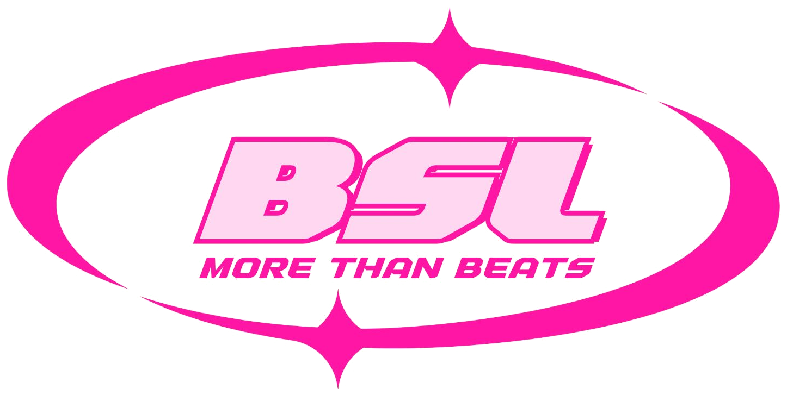
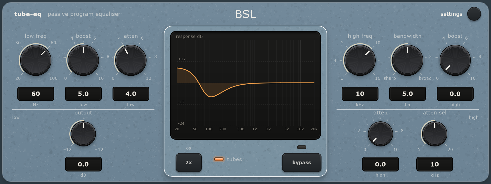
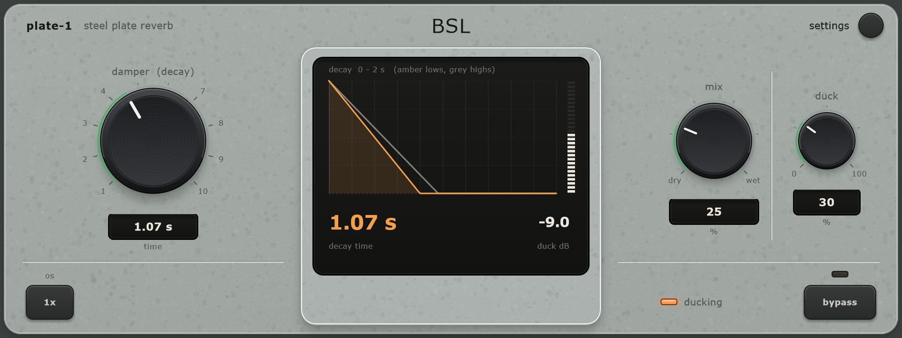

Bankz Sound Lab
More than beats– music software from BSL
We build the tools we make music with. A full DAW for Windows, and a shelf of 35 analog-hardware plugins that come with it.
Scroll to walk in ↓

Products
Made by Bankz Sound Lab01 · DAW · WINDOWS
Ovrtone
A Logic-style arrangement and mixer, FL Studio's piano roll and channel rack, and spatial mixing. Bring your own VST3 and CLAP plugins; Ovrtone is the host. Version 1.1.0, free.
Explore Ovrtone →



02 · PLUGINS · VST3
BSL Classics
35 circuit-informed models of classic studio hardware. Compressors, EQs, consoles, tape, reverbs, echoes and saturators. Included with Ovrtone and usable in any DAW.
Browse the shelf →